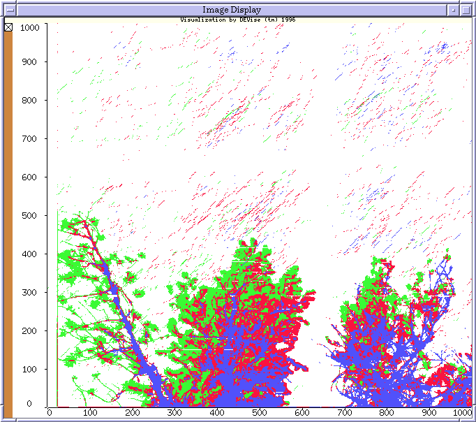

Soil Science/BIRCH Clustering Example

Input Data
The input data:
- is the result of clustering by
BIRCH on forest
canopy images.
- contains the attributes: x, y, and color.
The input file looks like:
39 1 6
45 1 6
50 1 6
...
Problem
We want to view the results of clustering by BIRCH to refine the clustering
parameters until the clustering is satisfactory.
Visualization
Click here to see our model of creating
visualizations.
The visualization is created as follows:
- Define the 'Image Display' window. This window simply displays each
record as a small rectangle of the specified color at the specified
location. The color is determined by the cluster into which BIRCH put
that record (green is leaves, blue is branches, etc.).
Observations
The clusters can be thought of as summaries of the underlying data.
It is important that the connection between the summaries and the underlying
data is preserved by DEVise.